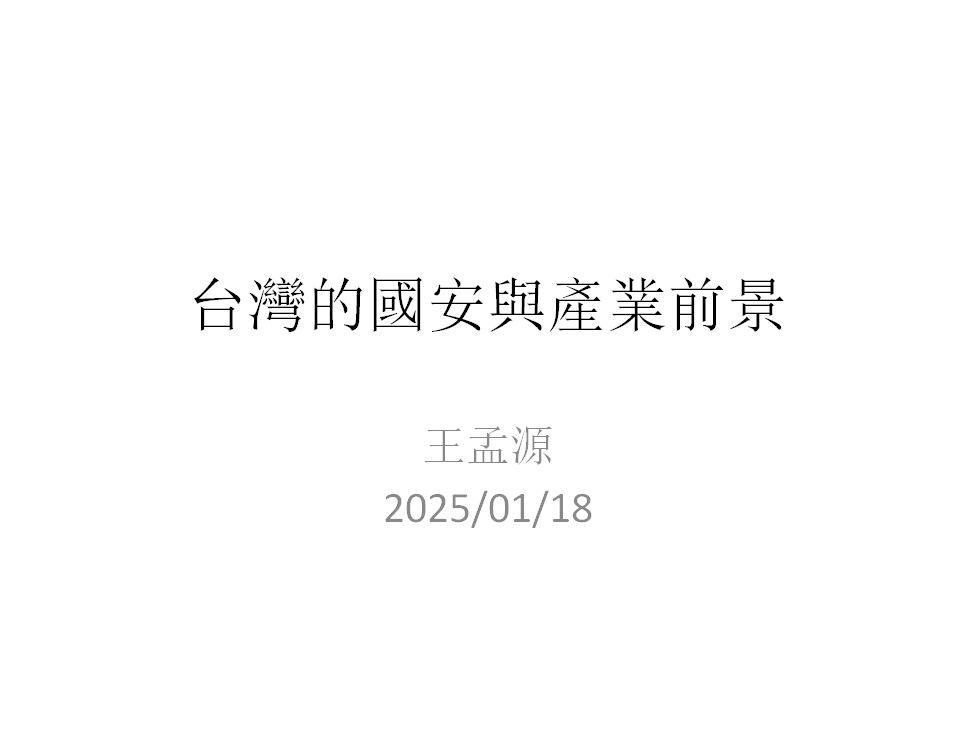
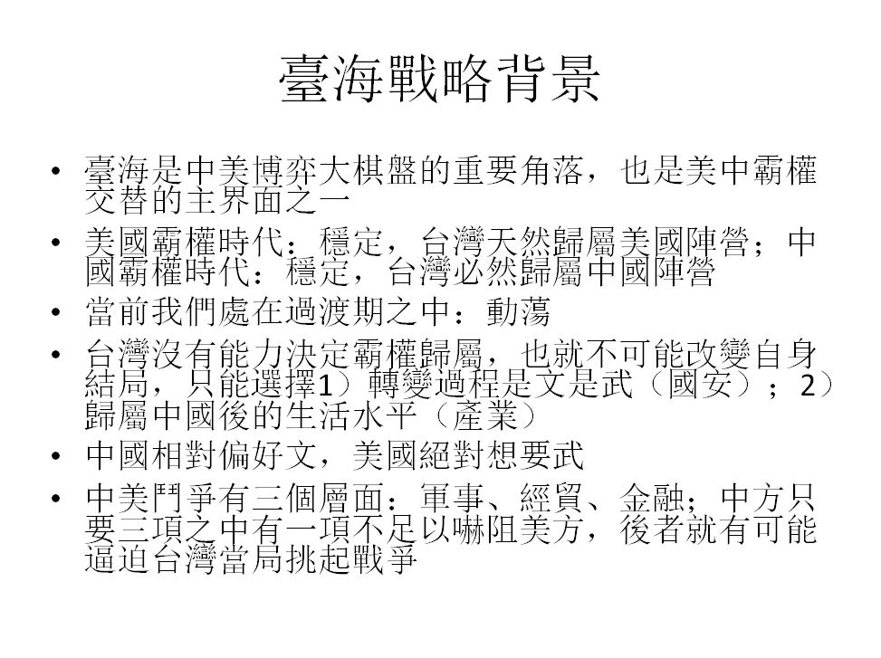
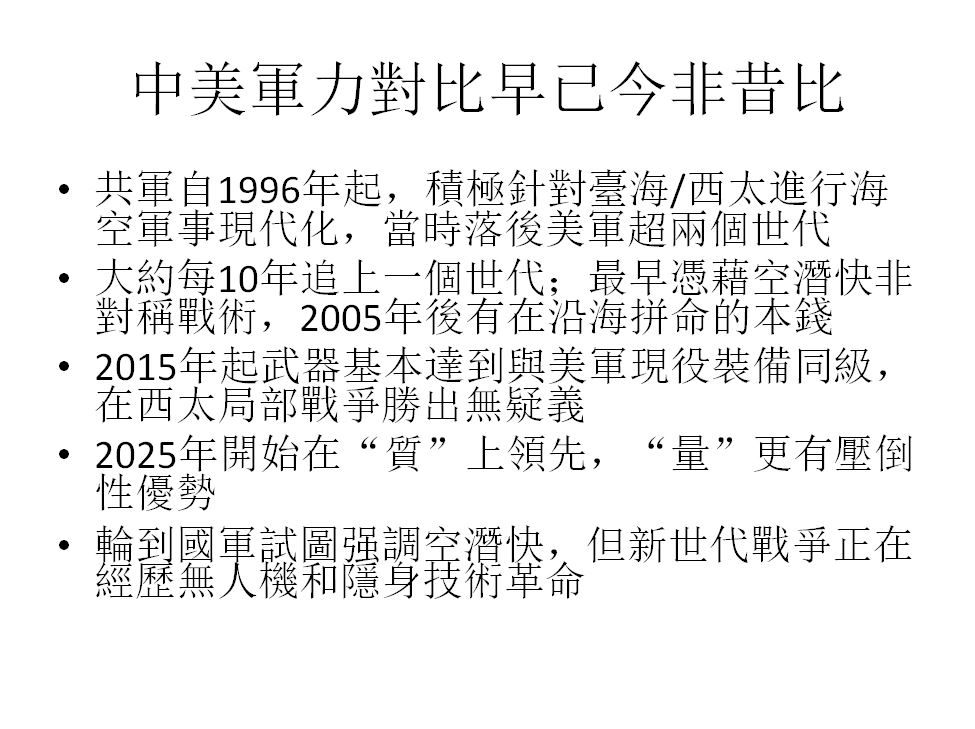
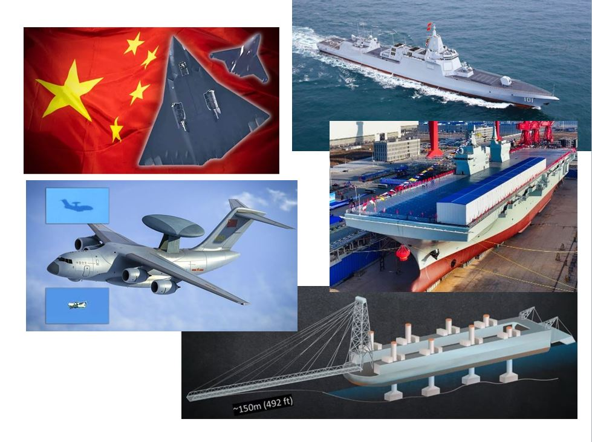
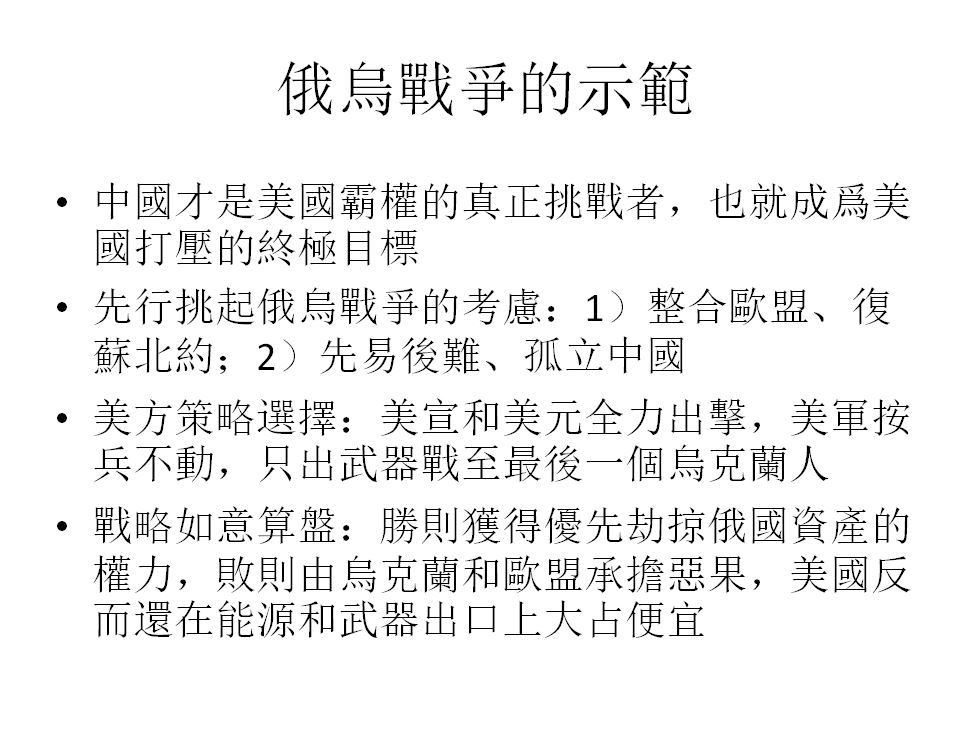
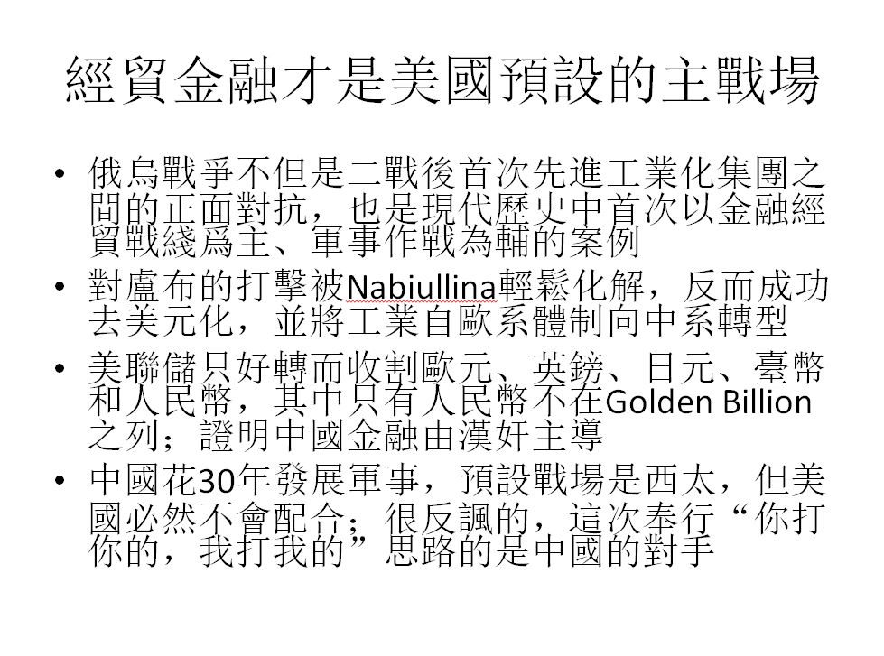
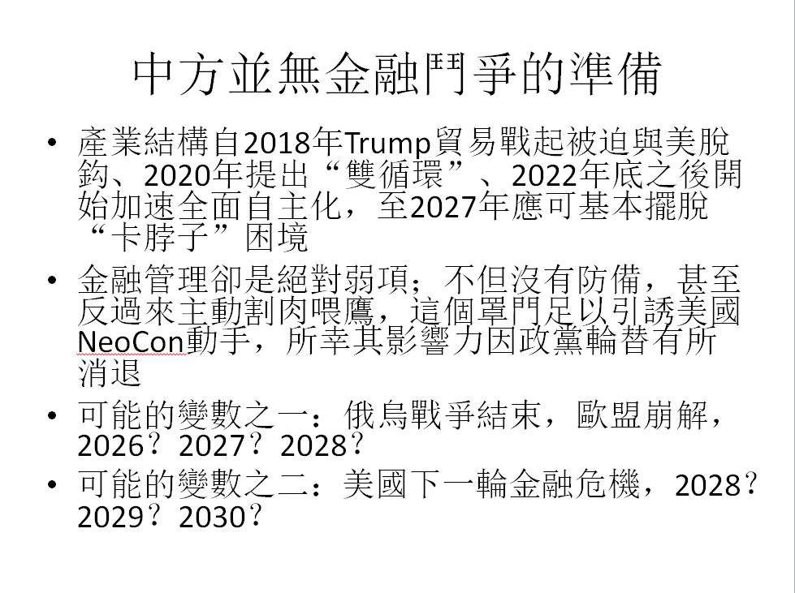
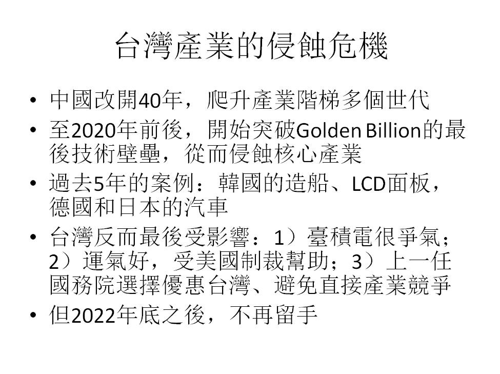
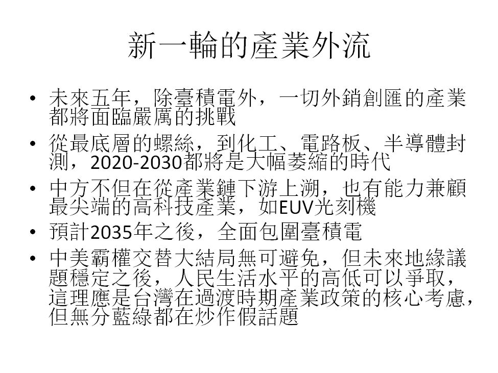
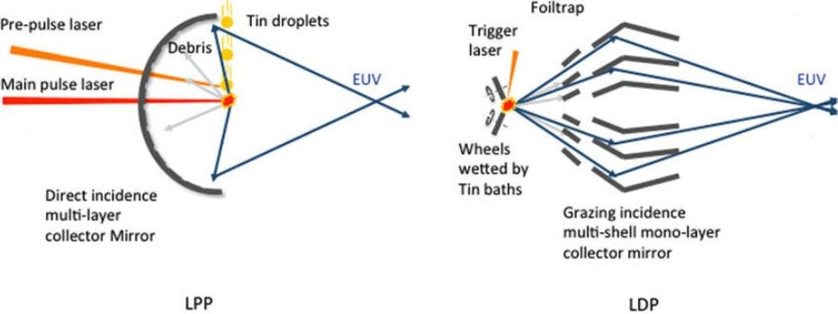

2025-01-19 10:53:00
2025年1月18日，我承清華校友會南區分會邀請，在高雄出席一場座談，包括問答一共講了大約三小時；以下是演講所用的PPT以及一點簡略的評論，供讀者參考。敏感議題已經説到露骨的極限，請不要在留言欄過度鑽研。

“國安”和“產業”（亦即生命和經濟）對應著台灣在戰略級別，唯一有些自主話語權的議題（參見下一頁），所以也是公共論壇應該專注的方向。陣營歸屬純由中美實力消長來決定，台灣完全沒有資格參與，政壇藍綠的炒作都是騙選票的詐欺行爲，被政客用來轉移注意力，以便犧牲人民生命安全和經濟利益而自肥。

軍事、經貿和金融（後兩者對應著戰後的制裁）是中美在臺海博弈的三個維度。只要中方在任何一個維度有弱點，美國NeoCon就有動力孤注一擲。然而如果中方在三方面都無懈可擊，那麽就反過來獲得主動出手的自由。所以所謂的現狀其實是一種亞穩態Metastable state，根本沒有長期維持的可能。

關於軍事實力對比的演化，請參考博客早年的一系列文章。
在無人機和隱身技術興起後的新世代戰爭中，信息優勢益加重要，空潛快之類的傳統非對稱戰法若無信息和反信息手段支持，可能全面失效。

這裏所列的六項武器，全都獨步全球。其中五項在這個年關僅僅兩周的時段内連續出現，唯一的例外是055，8年前第一艘建成下水，一並列在此處、用以示範美軍落後多年依舊拿不出同級裝備的窘境。

對台灣人民來說，俄烏戰爭具備極爲重要的參考價值，可惜被媒體徹底帶歪。這裏總結正確的戰略教訓。

以上總結俄烏戰爭的正確戰術教訓。
不過我必須提醒讀者，臺海戰略局勢和烏克蘭戰場並非完美的類比。這裏最大的差異，在於俄方的整體軍力明顯遜色於當面之敵北約的總和，因而Putin必須小心翼翼地避免烏克蘭崩潰太快引發美歐直接下場，只能溫水煮青蛙、拖延成長期消耗戰。相對的，中方的海空實力已經足以在第二島鏈之内橫掃美國加上僕從國日韓的聯軍，若是美軍真的出手，反而方便中國一並拿下琉球和關島，所以美方出兵的機率比在烏克蘭還要小（亦即不只是ε->0，而是ε^2），軍事行動的過程也將會是極爲迅猛短暫的。

前面提到的軍事、經貿、金融三個鬥爭維度，軍事勝敗早已毫無疑義，經貿產業也即將塵埃落定，中方只有金融方面的大窟窿還在持續惡化。考慮到美國NeoCon剛剛失勢，中美暫時都沒有主動出手的動機，於是即便台灣剛換上一個更極端的新政府，臺海局勢相對前幾年反倒有所緩和，又一次印證了台灣在此議題上無半點話語權的事實。然而這是非常脆弱的亞穩態，幾年内有很多可能打破平衡的遙遠國際事件（俄國打垮烏克蘭和美國金融危機都只是時間問題，歐盟是否因而崩解還在未定之天）。

台灣的外銷產業，除半導體之外，在過去兩年開始新一輪的急速萎縮。目前民進黨政府的對應（含許多經濟主管的公開評論），僅限於兩手一攤、自求多福。

然而要解決產業問題，只能通過政府級別的對話與合作。這個理應排名前二的政治議題，卻在當前的台灣政治環境下，是想都不用想的不可能；這是殖民地傀儡政權悲哀的又一體現。
【後註一，2025/02/08】過去三年我評論俄烏戰事，曾反復提到其戰場形態之所以出人意料地類似一戰，是因爲兩者同樣出現了革命性裝備的廣汎應用（一戰是機槍，當前是無人機），從而產生軍事戰術的歷史轉折點，導致二戰以來所有正規軍隊都奉行的大規模機械化縱深打擊，在交戰雙方的技術水平和兵員數量並不懸殊的前提下基本失效，迫使俄烏都轉而采用一戰末期德軍開發的特攻突擊小隊戰法（指Stormtroopers；博客早年已經解釋過，這裏的“Storm”不是“暴風”而是“突擊”的意思，所以“Stormtroopers”是“特攻突擊隊”而不是“暴風部隊”，與“Stormgewehr”是“突擊步槍”而不是“暴風步槍”、“Stormgeschutz”是“突擊炮”而不是“暴風炮”同理）。
有大陸軍迷站著説話不腰疼，從開戰起就不斷嘲笑俄軍拉跨，其實那個時段的中國陸軍在裝備和理論上與俄軍並無本質上的差別：詳細來説，參與朱日和演習的解放軍部隊，與同時期攻入烏克蘭的俄軍相比，電磁戰能力可能略强些，但同樣無法壓制人數兩倍、新世代反坦克武器人手一支（此處並無文學修辭上的誇大：北約被確認在戰前提供了９萬枚，明顯超過開戰時烏軍一綫步兵的總人數）、無人機質量數量對等、北約C4ISR體系全力兜底的防守方。中方的真正強處，在於具備全球近一半的工業產能和其所帶來的產業研發效率，所以雖然一樣是在學習應對戰場上的全新經驗教訓，中方裝備的升級，卻遠遠比俄方要更深入、全面、有效；例如要對抗無人機攻頂坦克，三年下來，俄軍只能把烏龜殼越做越大，而中國卻已經公開展示推銷世界首個實用化的全仰角、隨動式主動防護系統（Active Protection System，APS，型號為GL６，參見《解放军新型坦克防护系统 “黑科技”重磅升级！GL-6主动防御系统可拦截不同方向来袭目标》；美軍還在推廣之中的以色列製“Trophy”“獎杯”系統，使用有限仰角攔截器，無力應對高速和低速目標，基本專爲抵擋平射的RPG火箭彈設計，反無人機能力極爲有限）。由於中國原本就在民用無人機產業具有霸主級地位，我們可以簡單看出，在遙遠的下一場戰爭世代革命降臨之前，解放軍都將持續占有無人機和反無人機作戰的絕對優勢；正文中已經提過國軍空潛快非對稱戰法極可能因此徹底無效，而綠衛兵的諸般巷戰防禦“推演”（這兩個月身在台灣的不幸後果之一，是被極度弱智的公共輿論所環繞，包括YOUTUBE視頻推薦在内）也徒然淪爲與二戰前期意大利Mussolini諸多軍事妄想同一級別的小丑行徑。
【後註二，2025/03/11】本文有一個重要結論，在二月的《龍行天下》節目中也曾提及，亦即臺積電及其周邊產業固然是台灣過去兩年迅速喪失競爭力的例外，但也不可能長期維持優勢地位。這裏的邏輯論證可以簡單濃縮為：連ASML也將被取代，臺積電怎麽可能遺世獨立呢？
談到取代ASML，就必須討論中方的EUV光刻機。2023年博客（參見《金融史觀（三）政策建議》【後註三】）提到二代半導體大基金的貪腐浪費被高層下令清理（參見2022年《社會主義國家應該如何管理資本》一文的揭露和建議）之後，華爲在深圳新成立了幾家子公司，開始代為國家管理最尖端的製程研發，其中負責統籌半導體製程工藝（包含光刻機）的公司叫做SiCarrier新凯来。去年已經有足夠資訊，可以在留言討論中估計國產EUV光刻機商用交付約在2026年底/2027年初。本周又有消息更新（參見例如《China Develops Domestic EUV Tool, ASML Monopoly in Trouble》），除了再一次印證進度預期（2025年第三季試產，2026年量產）之外，還提到華爲選擇了與ASML不同的技術路綫：後者用的是LPP（Laser Produced Plasma）光源，而前者則采用LDP（請注意，這一波新聞全都把LDP説成是Laser-induced Discharge Plasma的縮寫，這應該是原始信息來源所犯的筆誤，學術界所討論的LDP向來都是Laser-assisted Discharge Plasma，參考例如這個日本團隊的一系列論文《LDP EUV source performance and cost-of-ownership improvement》）。

以上是LPP和LDP光源的示意圖。錫等離子體作爲EUV光刻機的光源，其技術難點有二：一是高功率輸出要求，二是如何匹配深紫外光反射鏡系統（包括等離子體擴散污染鏡面的問題）。LPP完全依賴激光來蒸發錫滴以產生等離子體，然而激光的產生和吸收過程，能量轉換效率先天就很低，於是不但電量需求極高，而且必須消散大量熱能（參考博客多年來對激光核聚變NIF的討論），這是LPP最大的缺點（其次是錫滴Tin droplet的準備和發送相當複雜）。而LDP的激光只負責定時定位，絕大部分的離子化能量由電場提供，所以在能量轉換效率上有超過一個數量級的優勢（此外，錫的準備也很簡單，可以直接用轉輪傳送）。LDP的缺點則在於較難匹配光學系統，包括等離子體光源發光面積大（因而難以聚焦，不過這也代表等離子體密度較低，導致發光光譜綫寬窄、更集中在13.5nm附近，在處理發散Dispersion現象上略有好處），和初始聚焦鏡模組頗為複雜（參考上圖；這裏的難點在於LDP的錫光源系統體積很大，原本應該配合透鏡，偏偏適用於13.5nm EUV的透鏡物理上並不存在，必須以反射鏡面來模擬其效果；這些光學反射鏡似乎由長春光電所負責研發）等等。當年ASML評比兩種技術路綫，以反射聚焦之後到達Photomask光掩膜的功率大小為衡量標準，而提供LDP方案的供應商落敗了；但20年後中國重新嘗試，實用設計的優化程度自然有所不同，因而路綫的選擇也不同。至於華爲方案最終與ASML的優劣對比，目前還難以斷定；我們翹首以待。
【後註三，2025/03/21】有讀者私下來問，正文討論台灣除半導體的所有出口型工業都在過去兩年迅速喪失競爭力，爲什麽沒有提工具機呢？畢竟那是早年博客也曾拿來和半導體相提並論的高精尖產業呀。原因很簡單，工具機產業的衰退，在2015年博客預言之後就立刻兌現了，十年中產值喪失六成（參見《工具機產值10年掉6成》），並非最近兩年的事，而其早衰的原因則是台灣遠遠不是國際工具機行業的領頭羊，中方主要與日本、歐洲等國競爭，沒有理由留手（成就參見《国产五轴机床六大"弑神"时刻！》，不足參見《国产五轴机床的"隐形绞索"》）。化工業也是完全一樣的邏輯和結果，只不過衰敗稍晚幾年（臺塑的營業額在2018年達到峰值之後，便一路直綫下降），時段接近正文中的其他產業案例，所以一並提起。
【後註四，2025/08/05】《The Diplomat》是昂撒殖民帝國體系中，負責探討亞太方向地緣政略和外交事務的專業期刊，所以日常喧囂中國威脅並鼓動臺海衝突。然而即便是職業戰爭販子，也不得不接受太明顯的事實；我指的是本周他們發表的一篇社論（參見《Taiwan’s Civil Society Is Not Ready for War》《台灣人民沒有打仗的心理準備》），論點正是幾個月前博客留言回復已經標注出來的：烏克蘭對抗俄軍的民心士氣十分堅忍强韌，遠非台灣所能企及。